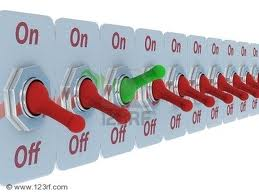
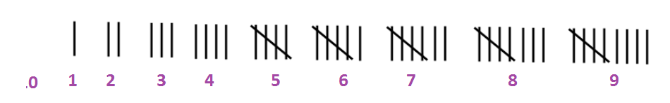
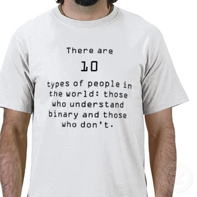

Review: why
computer must use
binary numbers
Why an
(electronical) computer must use
binary numbers to
store
all its
information:
- An (electronical)
computer stores
all its
information in the
(computer)
memory
-
Computer memory consists of
(electronical)
switches
(that can be in
the
on (= 1)
or
off (= 0)
- A series of
(electronic) switches can
store
a binary number:

Therefore:
-
All information inside
a computer are
stored as
binary numbers
|
|
The Number Systems
-
Number (numeral) system:
(From: Wikipedia:
click here )
- A number (numeral) system =
a writing system
for expressing numerical values
|
- We will first
study:
- How
humans
use the
decimal number system
to
represent
unsigned
integer (whole number) values
- How
computers
use the
binary number system
to represent
unsigned
integer (whole number) values
|
- Later, we will
study how to
represent
other things:
- Signed integer
values,
floating point
numbers,
letters,
etc
|
|
The univeral way to
represent numerical values
zero, one, ..., nine
A
universal way to
represent the
values
zero, one, ..., nine is to
use
tally marks:

Note:
- Numbers like
0, 1, 2, ..., 9 are
not universal, but
cultural.
- Example:
(ancient) Romans use
the symbols
I, II, III, IV, V, VI, ...
|
For simplicity,
I will use
numbers of dots to
represent their
numerical value:
( ) (•) (••) (•••) (••••) (•••••)
(••••••) (•••••••) (••••••••) (•••••••••)
|
The decimal number system
and decimal numbers
- The decimal (deca = 10) number system
uses
10 symbols (= digits) to
represent
10 different values.
- The values that we need to
represent in the
decimal (= 10) number system are:
( ) (•) (••) (•••) (••••) (•••••)
(••••••) (•••••••) (••••••••) (•••••••••)
|
-
Western cultures use the
following
symbols
to represent the
10 values:
( ) (•) (••) (•••) (••••) (•••••)
0 1 2 3 4 5
(••••••) (•••••••) (••••••••) (•••••••••)
6 7 8 9
|
|
Positional number systems:
the value represented by
a given digit symbol
Positional
number system:
- The value of
a digit (= symbol)
depends on its
position within the
(decimal) number
|
The
decimal
number system:
- The
value of a
digit is
multiplied by 10 for
each position further to the left
Example:
2 represents the value (••)
3 represents the value (•••)
23 represents the value
(•• •• •• •• •• •• •• •• •• ••)
(•••)
for a total of twenty three • !!!
|
|
The binary number system
The value that is
represented by
a binary number:
- The value of
a digit
in a binary number
also depends on its
position in the
(binary) number:
- The value of a
binary digit is
multiplied by 2 for
each position further to the left
|
Example:
1 represents the quantity (•)
11 represents the quantity:
(• •)
•
Therefore: 11 in the binary number system
represents the value three
|
|
The value represented by a
binary number -
general expression
- Formula
to compute
the decimal value
that is
represented
of a binary number:
Given a binary number:
dndn-1...d1d0
where di is a binery digit (0 or 1)
The decimal value represented by the binary number is:
dn×2n + dn-1×2n-1 ... + d1×21 + d0×20
|
Example:
Binary number Value represented in decimal
--------------- --------------------------------
101 1×22 + 0×21 + 1×20 = 4 + 1 = 5
110 1×22 + 1×21 + 0×20 = 4 + 2 = 6
|
|
Sample of
some numerical values and their
representation
in decimal and
in binary
Representation in the Representation in the
Value Decimal number system Binary number system
-----------------------------------------------------------------
Zero 0 0
One 1 1
Two 2 10
Three 3 11
Four 4 100
Five 5 101
Six 6 110
Seven 7 111
Eight 8 1000
Nine 9 1001
Ten 10 1010
Eleven 11 1011
Twelve 12 1100
Thirteen 13 1101
Fourteen 14 1110
Fifteen 15 1111
|
Question:
do you see
an ambiguity problem ???
(Does 10 represent
the value
ten or
two ?)
Notation used
in CS255 to make a number unambiguous
Notation used in
CS255 to
make a
number
unambiguous:
You should now understand this sentence....
How do you
read this
sentence:

You should now understand this sentence....
How do you
read this
sentence:
There are 10(2) (= 2)
types of people in the world:
those who understand binary and those who don't
❮
❯